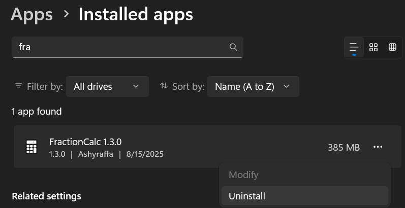

How to Uninstall FractionCalc??
First things first... Where you download FractionCalc??
Did you download it on the official website??
If not, i cannot help you.
Uninstalling FractionCalc
Depending the OS are you using, here's the way to uninstall FractionCalc:
If you are using Windows:
If you install it using the official installer, you can uninstall it like other apps.
Here's the way for Windows 11:
- Open the Settings App
- Select Apps, then choose Installed Apps.
- Find FractionCalc on the list, click it and hit the Uninstall button.

If you are using Linux:
If you install it using the official AppImage, you can uninstall it by deleting the file.
Here's the way:
- Open your File Manager.
- Go to the folder where you downloaded FractionCalc.
- Right-click on the FractionCalc.AppImage file and select Delete.
- Alternatively, you can open a terminal and type
rm /path/to/FractionCalc.AppImageto delete it.
If you install it using the .deb installer, here's the way to uninstall:
- Open a terminal.
- If you not sure for the app package name, type
dpkg -l | grep -i fractioncalcto reveal the app package. - Type
sudo apt remove fractioncalcand hit Enter. - Enter your password if prompted, and confirm the uninstallation.
The options may different depending the distro you are using.